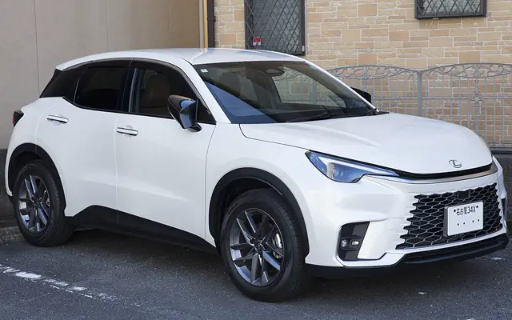

Par Motor › Precios por modelo › Lexus LBX
Precio de segunda mano · noviembre de 2026¿Cuánto vale un Lexus LBX de segunda mano?

Precio justo estimado de un Lexus LBX usado en España, año por año, con los kilómetros normales para su edad y en buen estado: de 26.600 € a 60.300 €. Para tasar el tuyo con sus kilómetros reales y su estado, usa el tasador gratis.
Precios del Lexus LBX por año
LBX (2024–hoy)
Precio de nuevo: 1.5 Hybrid 136 CV, 31.000 € · Morizo RR 1.6 Turbo 304 CV, 58.000 € · 1.5 Hybrid AWD 136 CV, 34.000 €
| Año | Km normales | 1.5 Hybrid 136 CV · Híbrido | Morizo RR 1.6 Turbo 304 CV · Gasolina | 1.5 Hybrid AWD 136 CV · Híbrido |
|---|---|---|---|---|
| 2026 | 5.000 km | 33.300 € | 60.300 € | 36.500 € |
| 2025 | 20.000 km | 28.500 € | 53.500 € | 31.200 € |
| 2024 | 35.000 km | 26.600 € | 50.800 € | 29.100 € |
Kilómetros normales: 15.000 al año en gasolina, híbridos y eléctricos, y 20.000 en diésel, con un máximo de 100.000 km (por encima no tasamos: el precio depende demasiado del historial de cada coche). Cifras redondeadas a 100 €.
Preguntas frecuentes
¿Cuánto vale un Lexus LBX de segunda mano?
Según el año, la versión y los kilómetros, un Lexus LBX usado vale hoy de 26.600 € a 60.300 € en España. El más barato de nuestra tabla es un 1.5 Hybrid de 2024 (26.600 €) y el más caro un Morizo RR 1.6 Turbo de 2026 (60.300 €). Son precios justos estimados entre particulares y profesionales, con los kilómetros normales para su edad y en buen estado.
¿Qué motorizaciones tiene el Lexus LBX?
En nuestra base de datos hay versiones híbrido y gasolina, en 1 generación: LBX.
¿Cómo sé si me piden demasiado por un Lexus LBX?
Abre el tasador de Par Motor, elige el Lexus LBX, el año y los kilómetros reales, y escribe lo que te piden. Te diremos si está por debajo del precio justo (chollo) o por encima (caro). Es gratis y no pide registro ni matrícula.
Otros Lexus
Compara su coste real
El precio de compra es solo una parte. Mira cuánto te costaría al mes con combustible, seguro, neumáticos, mantenimiento y lo que pierde de valor.
Abrir el comparador →